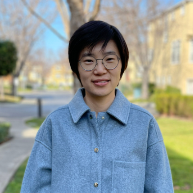

Xiaoai Zhao
Assistant Professor
Departments of Neuroscience and Comparative Medicine, Yale School of Medicine
Research Focus
Dr. Zhao’s lab investigates the functional roles of complex membrane lipids in cellular and organismal physiology. Her group studies how phospholipid and sphingolipid composition regulates cellular processes, organelle function, and tissue integrity during normal physiology, aging, and age-related disease.
The lab integrates advanced mass spectrometry–based lipidomics, organelle-resolved lipid profiling, and technology development to uncover how dynamic lipid remodeling contributes to cellular stress responses and systemic metabolic regulation.
Role in My Training
My doctoral focus within Dr. Zhao’s lab centers on complex lipids in systems metabolism. I investigate how lipid remodeling contributes to tissue–tissue communication and organismal metabolic regulation across aging and chronic disease.
Dr. Zhao provides rigorous training in quantitative mass spectrometry–based lipidomics, lipid metabolite tracing, and enzymatic pathway inference, shaping how I define lipid effector networks at the systems level and integrate them into multi-omic models.